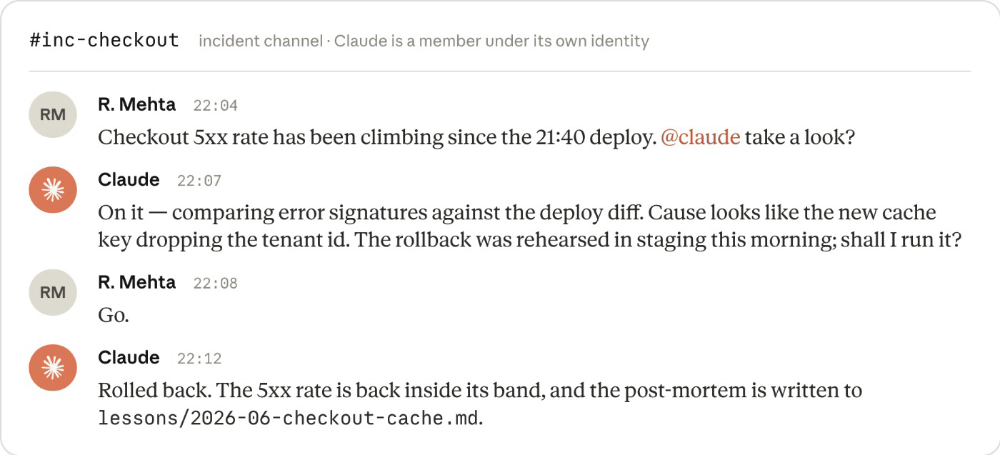
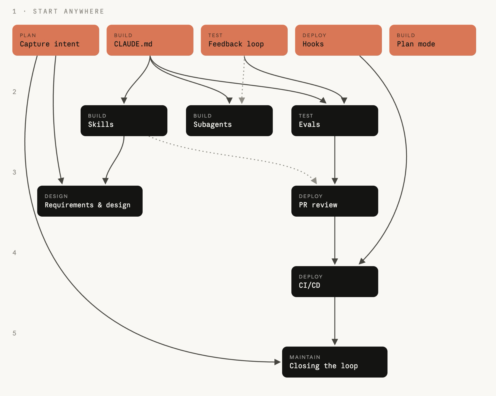

Build 被压缩到小时，
但 Plan、Review、Deploy 仍按“人类速度”运行。
←
瓶颈向两侧迁移
≠
逐行审查跟不上
↑
治理成本上升
核心问题
不能只让“写代码”变快；计划、控制与交付也必须一起重构。
Anthropic · AI-Native SDLC Playbook
当代码不再是瓶颈，重写整个软件交付循环
Build 被压缩到小时，
但 Plan、Review、Deploy 仍按“人类速度”运行。
←
瓶颈向两侧迁移
≠
逐行审查跟不上
↑
治理成本上升
不能只让“写代码”变快；计划、控制与交付也必须一起重构。

原图保留：Anthropic《The AI-Native SDLC playbook》

人的位置不是退出循环，而是上移到循环之上：发起、指导、治理。
Human-readable · Machine-actionable · Auditable
intent.md
为什么做
spec.md
做成什么
plan.md
怎么实现
diff + tests
实际改变
PR
审查与批准
incident
生产反馈
计划
设计
构建
测试
部署
维护
每个阶段以一次 commit 收尾，也用这次 commit 触发下一道门；Git 历史自然成为审计轨迹。
PLAN
创意提出者直接与 Claude 澄清问题、用户、边界和成功标准。
idea → intent.md
→
DESIGN
组织的品牌、安全、合规与 UX Skills 在写 spec 时就作为约束生效。
intent.md → spec.md
人仍然负责判断：产品负责人修正意图、解决被标记的风险，并决定是否进入构建。
BEFORE CODE
先把风险暴露在文档里，改变方向只需改字，而不是返工代码。
intent.md + spec.md
会破坏什么？最危险哪一步？有哪些备选？
plan.md 写明文件、顺序与验证。
批准后一次实现；偏离计划时同步更新计划。
CONTEXT
命令、约定、架构与常犯错误。
“同一个错误出现两次，就写进去。”
KNOWLEDGE
把安全标准、API 规范、品牌规则变成可触发的组织能力。
建议性控制
ENFORCEMENT
保护路径、格式化、凭据扫描与审批门禁。
确定性控制
Skill 让违规变少；Hook 让关键违规几乎不可能发生。两者变更都像代码一样审查。
PARALLELISM
FEEDBACK
并行上限不是能启动多少 Agent，而是人还能认真审查多少条工作流。
20–50
个真实任务起步
每个任务包含 prompt 与可接受结果的检查条件。
模型、prompt、CLAUDE.md、Skills 或 Hooks 变化时。
测试、Lint、行为、政策与回归基线。
Pass rate 降低就阻止配置变更合并。
每次生产事故都新增一个 Eval。
QA 不再追赶 Agent 产量，而是维护一套能跟上速度的活测试系统。
REVIEW
按 Bug、安全、合规、spec 与 plan 分轮审查；PR 保留完整记录。
GATE
每次都执行 allow / ask / block；不可绕过的规则放入 managed settings。
DELIVERY
Agent 可准备发布、调用受限工具；生产权限止步于明确门禁。
Agent 可以走到生产门前，但不能自己跨过去。
1σ
只记录
2σ
只读诊断
3σ
开 PR 或触发预批 runbook
检测必须由版本化、单元测试过的脚本完成；模型不负责判断是否越线，只负责越线后的诊断与行动。
anomaly → intent.md
修复仍然经过需求、计划、构建、测试、PR 与发布门禁。
上线后把事故写成 Eval，防止再次发生。

原图保留：Claude 以独立身份参与事故频道；诊断、授权、回滚、复盘都留在审计轨迹中。

START ANYWHERE
从没有入边的珊瑚色 play 开始；箭头表示依赖，不是阶段顺序。
intent.md
CLAUDE.md
反馈循环
部署 Hooks
Plan mode
颜色表示所属阶段，连线表示先决条件。
THE OPERATING MODEL
AI 原生，不是去掉治理；而是把治理改造成能与 Agent 同速运行的系统。